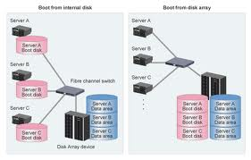
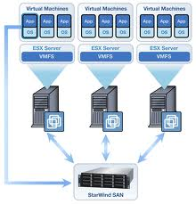

Cos'è SAN


Una Storage Area Network (SAN) è una rete o parte di una rete ad alta velocità di trasmissione (generalmente Gigabit/sec) costituita esclusivamente da dispositivi di memorizzazione di massa, in alcuni casi anche di tipi e tecnologie differenti. Il suo scopo è quello di rendere tali risorse di immagazzinamento (storage) disponibili per qualsiasi computer (generalmente application server e DDBB server) connesso ad essa.[1]
I protocolli attualmente più diffusi, usati per la comunicazione all'interno di una SAN, sono FC (Fibre Channel) ed iSCSI (Internet SCSI).
Più precisamente, il dizionario tecnico pubblicato dalla Storage Networking Industry Association (SNIA) definisce una rete SAN nei seguenti termini:
« Una rete il cui scopo principale è il trasferimento di dati tra sistemi di computer ed elementi di storage e tra elementi di storage. Una rete SAN consiste in un’infrastruttura di comunicazione, che fornisce connessioni fisiche e in un livello di gestione, che organizza connessioni, elementi di storage e sistemi di computer in modo da garantire un trasferimento di dati sicuro e robusto. »